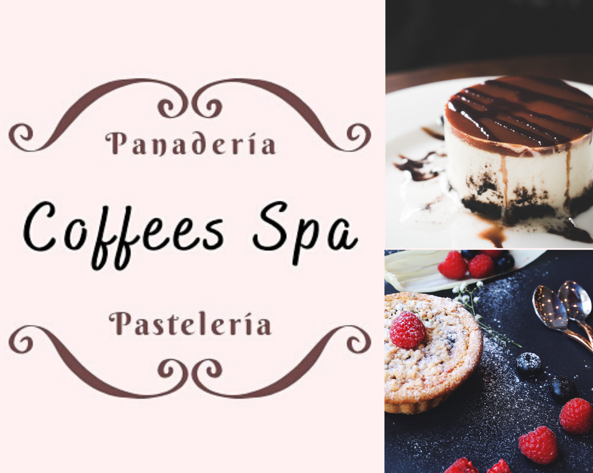
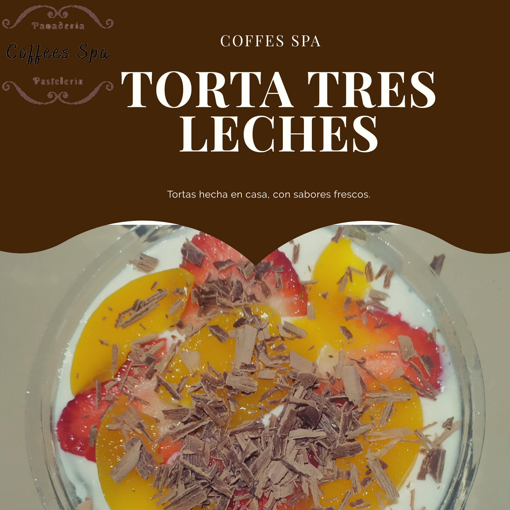
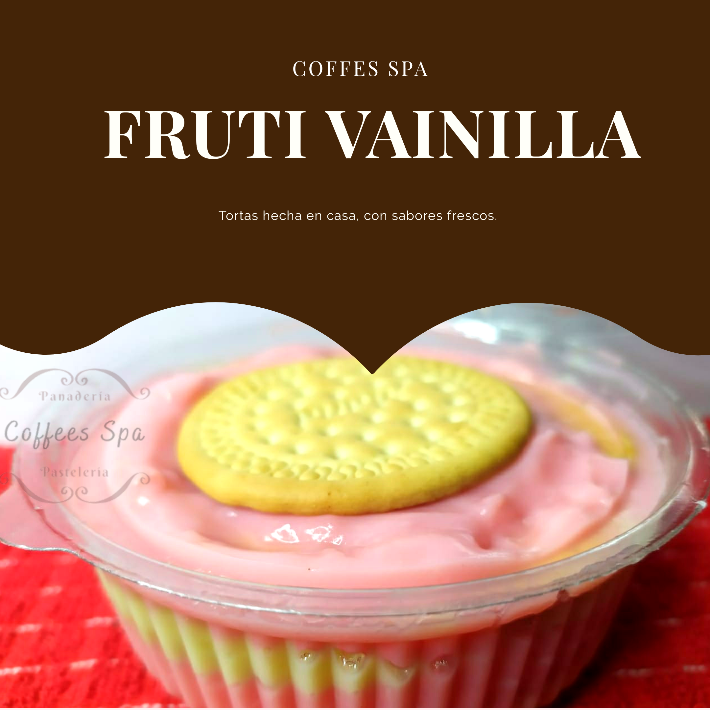
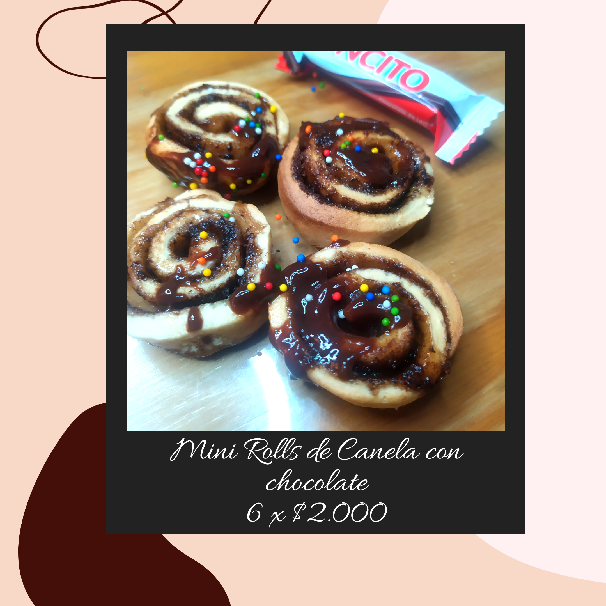
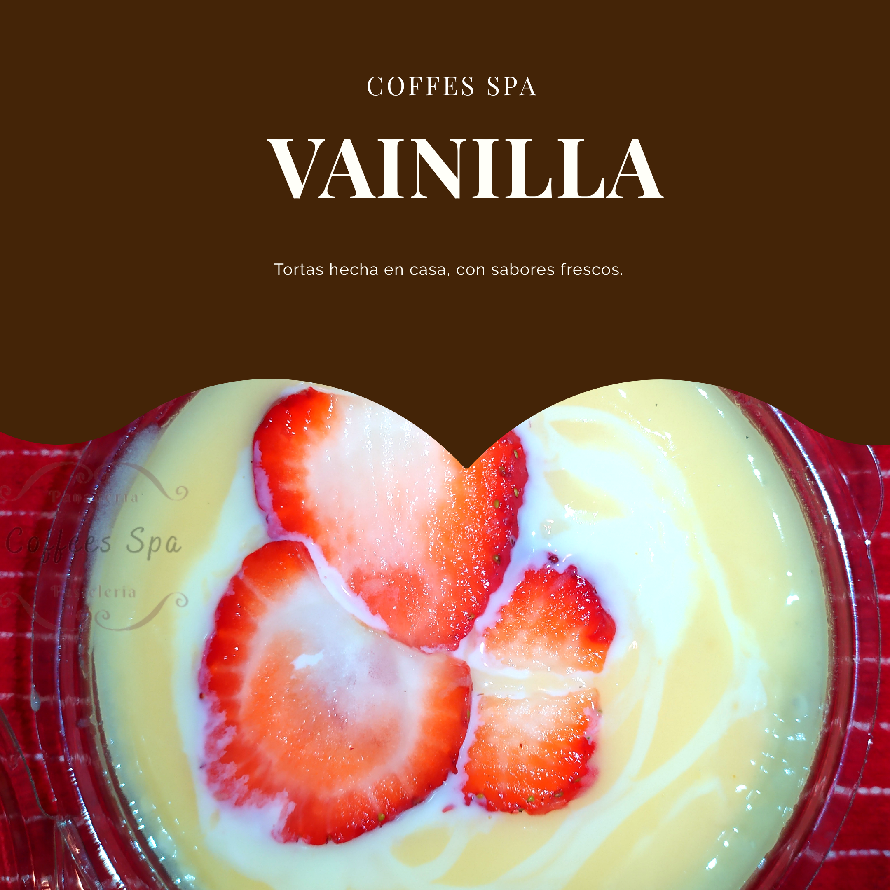
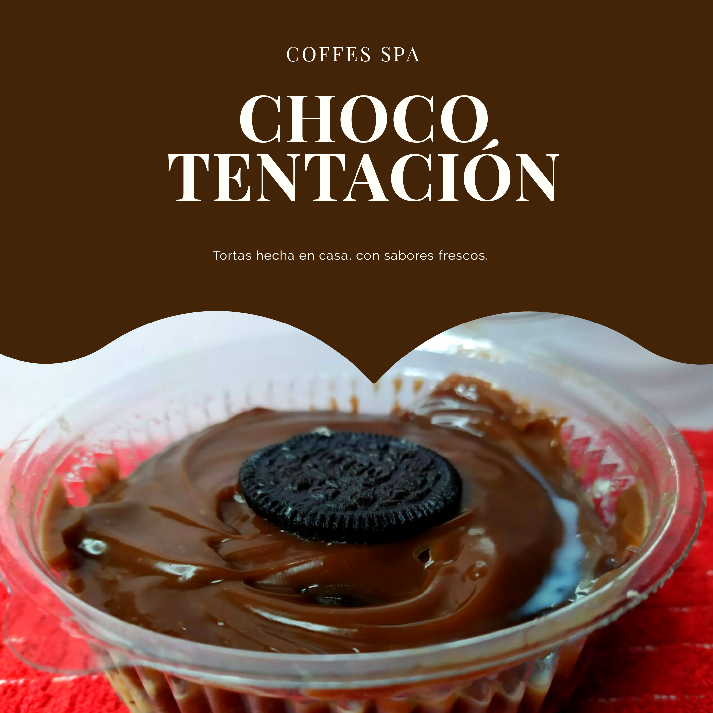

Galería
     Aprende sobre Café, Reposteria y Spa
Mas que una cafeteria somos un espacio de relajación, para que te sientas agusto en nuestros espacios.
La repostería, confitería o pastelería es el arte de preparar o decorar pasteles u otros postres. El término repostería es el que se utiliza para denominar al tipo de gastronomía que se basa en la preparación, y decoración de platos dulces tales como pies, tartas, pasteles, galletas, budines, etc. Postres hechos con amor y sabor de hogar...
Un Spa es un lugar donde se ofrecen terapias, tratamientos y actividades relajantes. ... Exfoliación corporal. Limpieza facial. Sesión de relax. Cuidado especial de pies y manos. Baño, exfoliación e hidratación. Sesión de relajación.